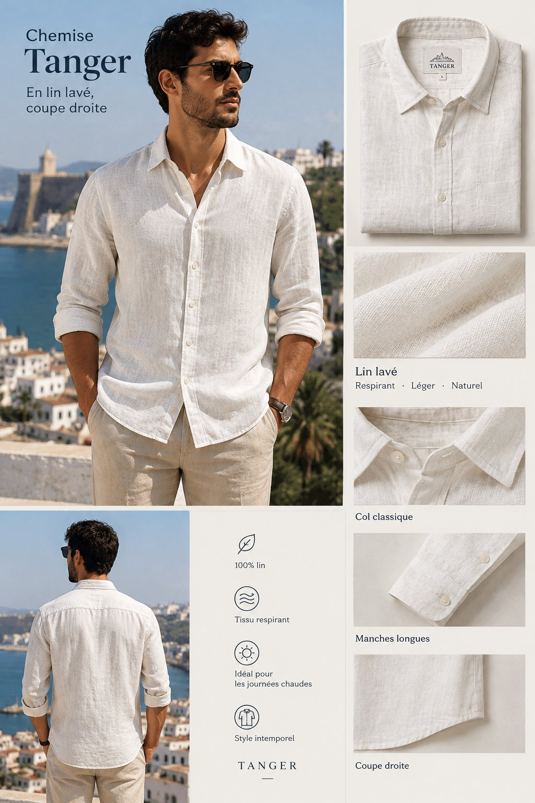

Une chemise légère pensée pour les journées chaudes, en lin 100 % lavé qui devient plus souple à chaque lavage. Sa coupe droite tombe bien rentrée ou portée ouverte sur un t-shirt, du bureau à la plage.
Format SKU : marque, modèle, couleur, taille. Seuil d'alerte réassort fixé à 10 unités.
| SKU | Couleur | Taille | Stock | Statut |
|---|---|---|---|---|
| AN-TNG-ECR-S | Écru | S | 18 | En stock |
| AN-TNG-ECR-M | Écru | M | 32 | En stock |
| AN-TNG-ECR-L | Écru | L | 27 | En stock |
| AN-TNG-ECR-XL | Écru | XL | 9 | Réassort |
| AN-TNG-OLV-S | Olive | S | 12 | En stock |
| AN-TNG-OLV-M | Olive | M | 24 | En stock |
| AN-TNG-OLV-L | Olive | L | 20 | En stock |
| AN-TNG-OLV-XL | Olive | XL | 6 | Réassort |
| AN-TNG-BLN-S | Bleu nuit | S | 15 | En stock |
| AN-TNG-BLN-M | Bleu nuit | M | 29 | En stock |
| AN-TNG-BLN-L | Bleu nuit | L | 22 | En stock |
| AN-TNG-BLN-XL | Bleu nuit | XL | 11 | En stock |
Mesures du vêtement à plat, en centimètres, tolérance ± 1 cm. Le mannequin mesure 1,80 m et porte la taille M.
| Taille | Tour de poitrine | Longueur dos | Épaules | Longueur manche |
|---|---|---|---|---|
| S | 104 | 72 | 44 | 62 |
| M | 110 | 74 | 46 | 63 |
| L | 116 | 76 | 48 | 64 |
| XL | 122 | 78 | 50 | 65 |